For my chosen place or city, create a theme/criteria/category that groups together at least 12 locations. e.g. all the pools I’ve swam in I may have multiple categories, but they must be related. e.g. if Summer in Toronto is my overall theme/category, all the pools I’ve swam in and best McDonald’s Drive-Thrus can be sub-categories I must be able to represent everything from your list of locations on a printed map. My locations can be buildings, streets, neighborhoods, events, specific rooms inside buildings, etc. As long as you have 12 distinct items that can be mapped. Select places that are personally significant. The goal of this project is to create a guidebook and map for a place that goes deeper than its stereotypes and popular tourist attractions. Think about your unique experience and connection to your place/city and convey that attitude/feeling through typography. Create a guidebook for the locations that accompanies your typographic map. The medium/format is completely up to you: it can be printed, a website, an Instagram account, postcards, etc. However, my guidebook must be portable; it should be easy for someone to bring the guidebook with them if they ever visit my chosen place. A small printed handbook or a website optimized for mobile would be the first things that come to mind.
Reference that I was inspired by 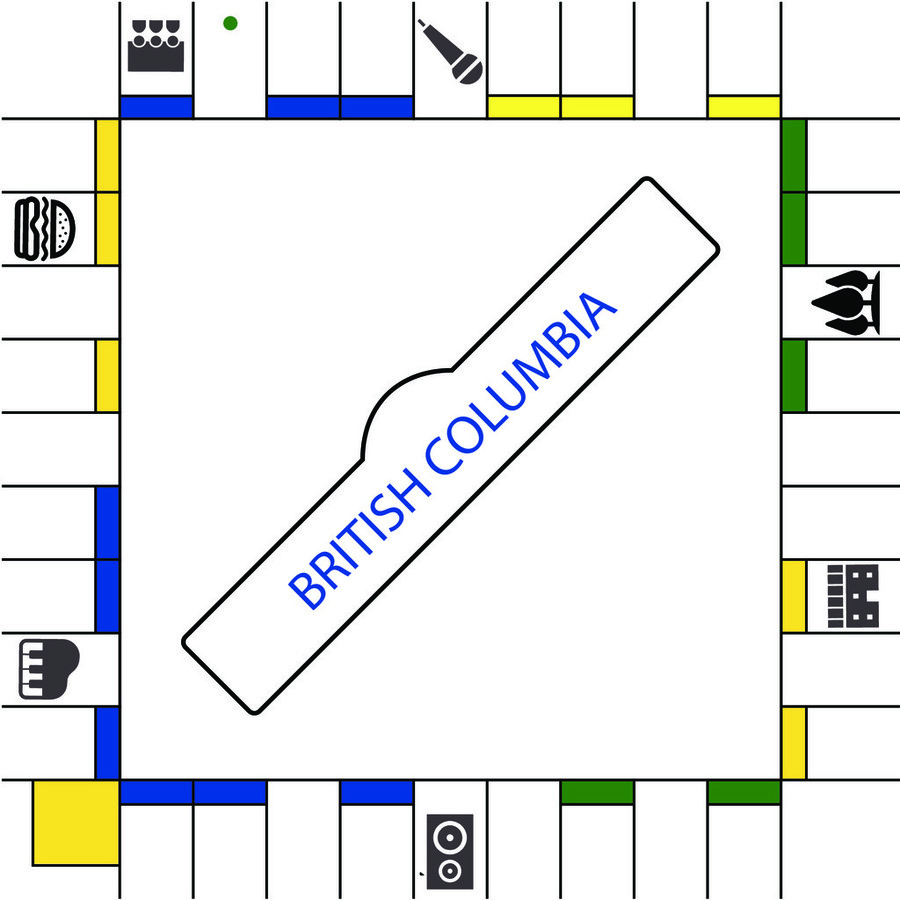 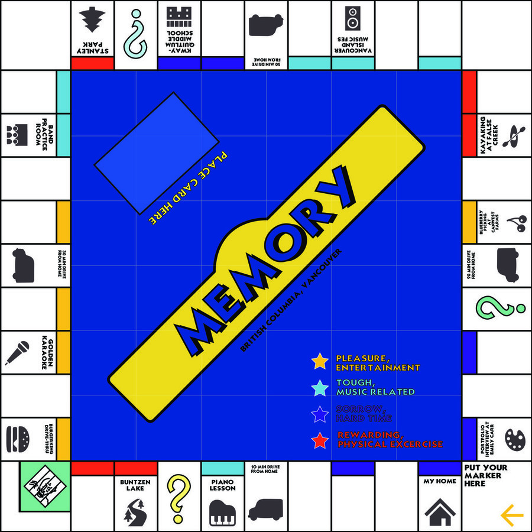 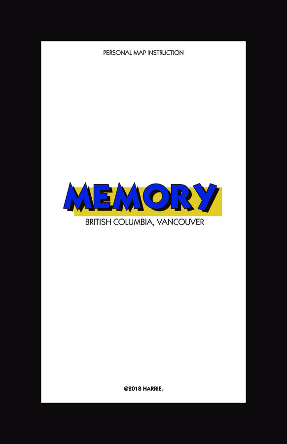 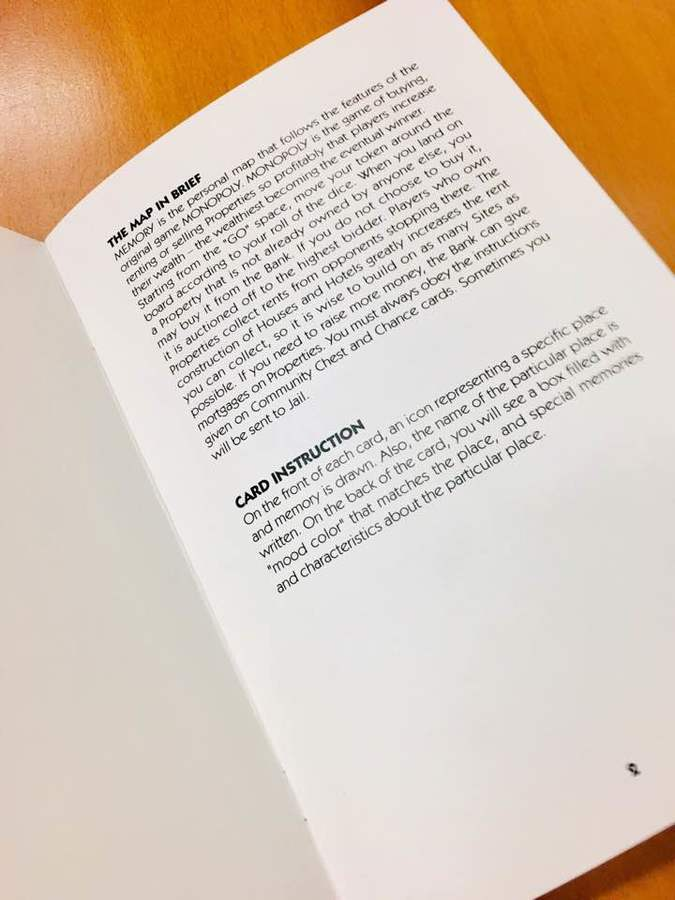
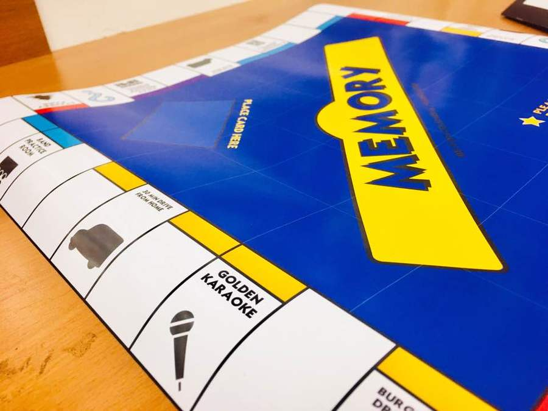
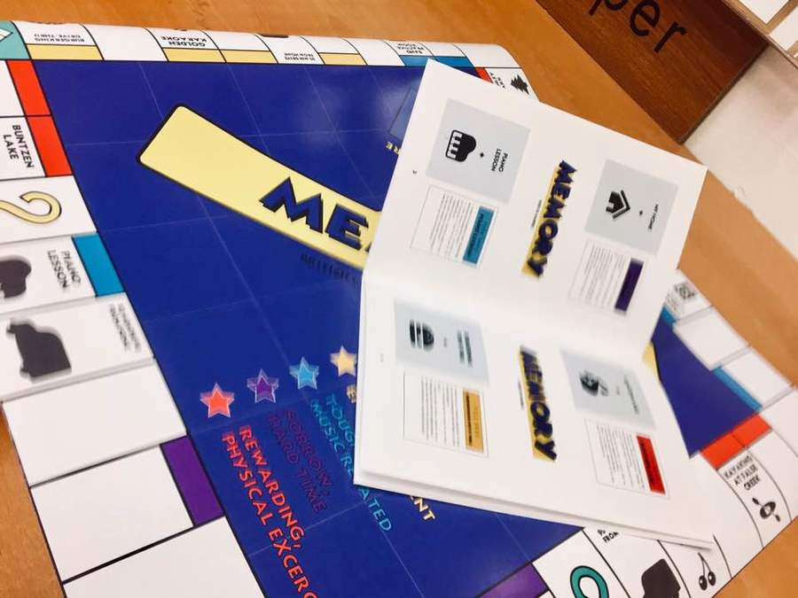
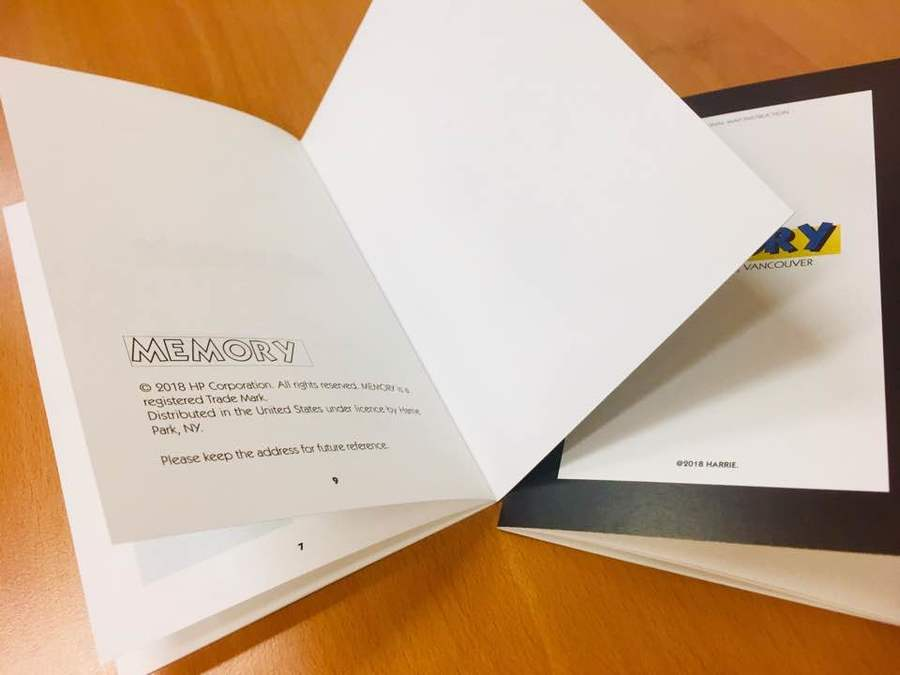
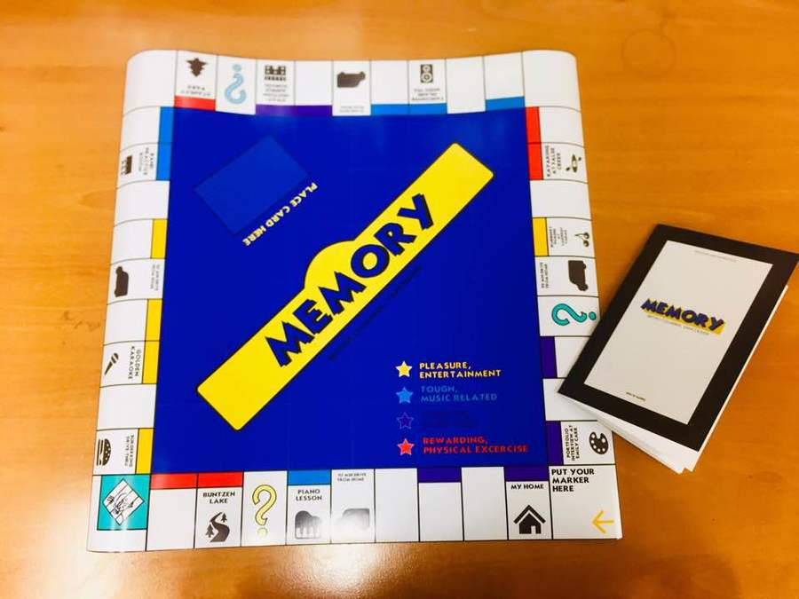
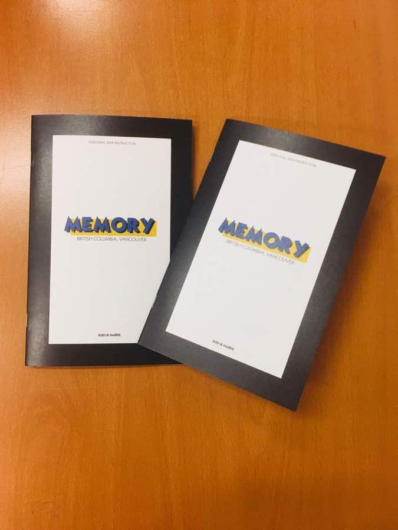
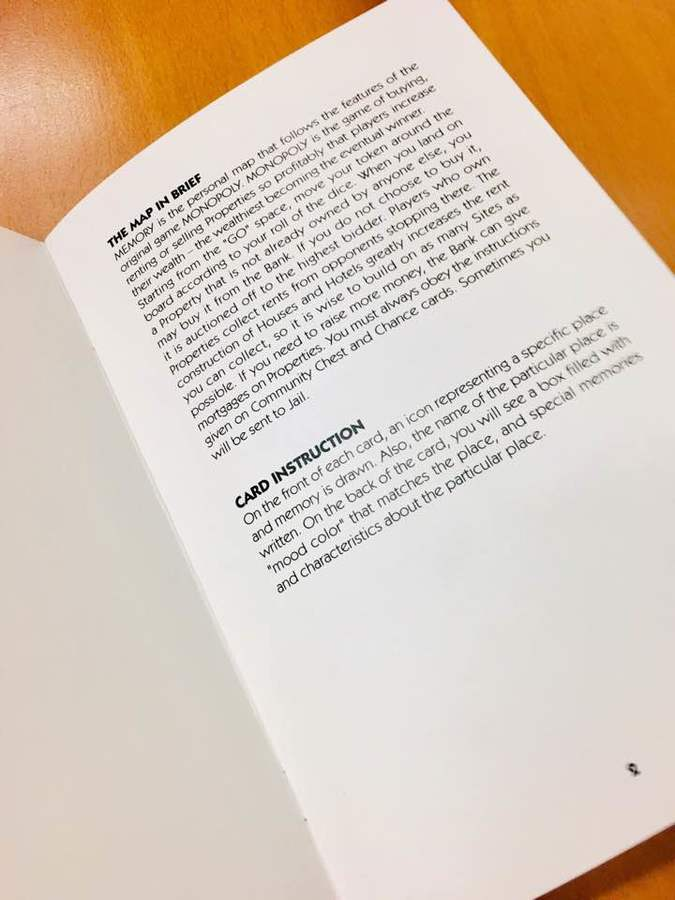
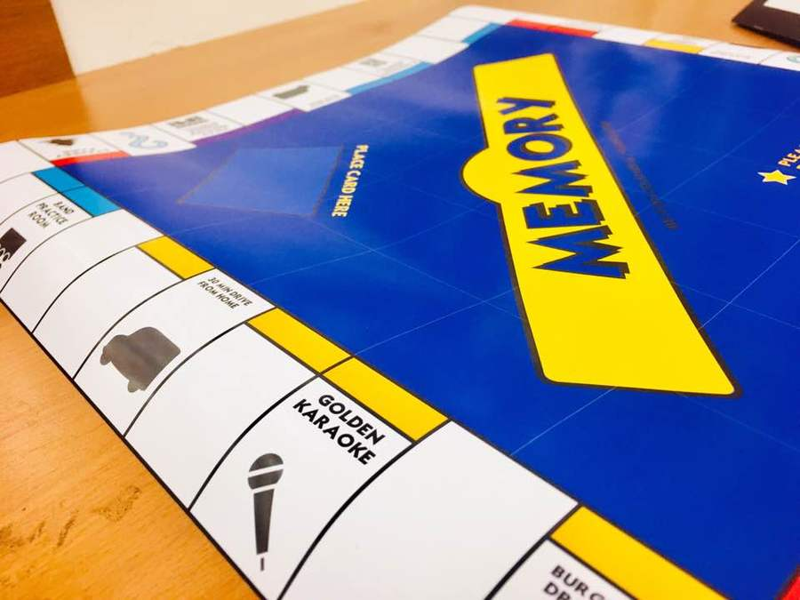
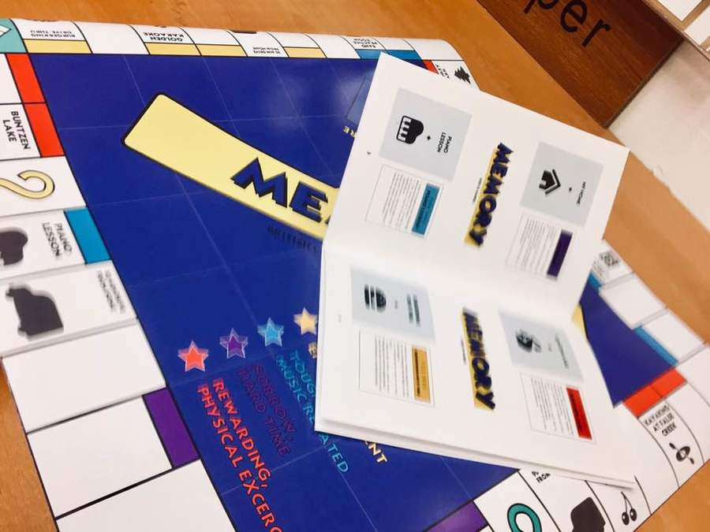
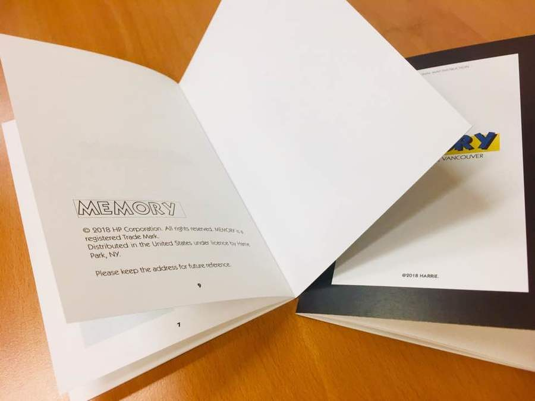
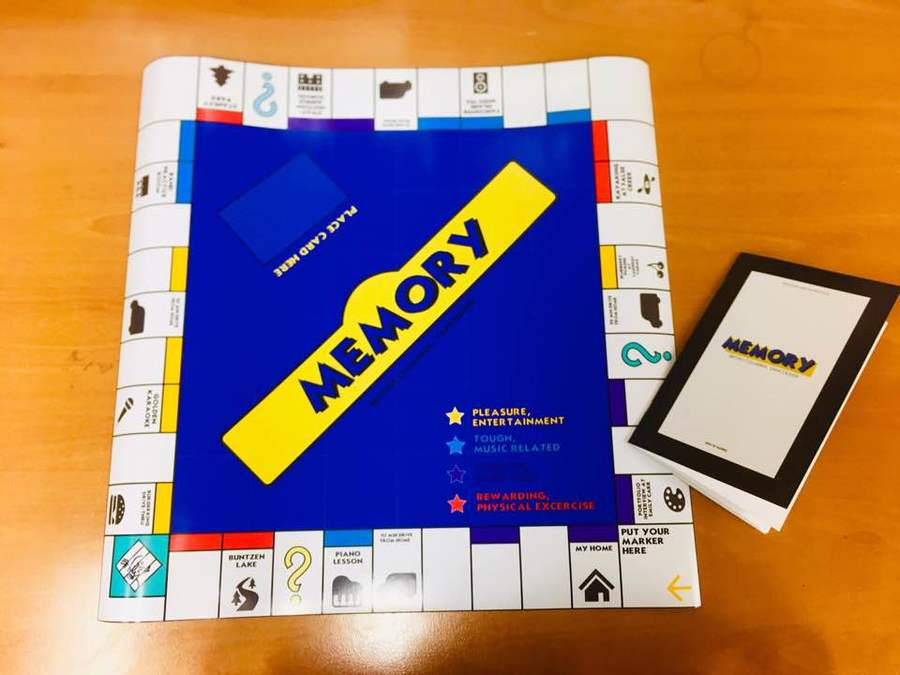
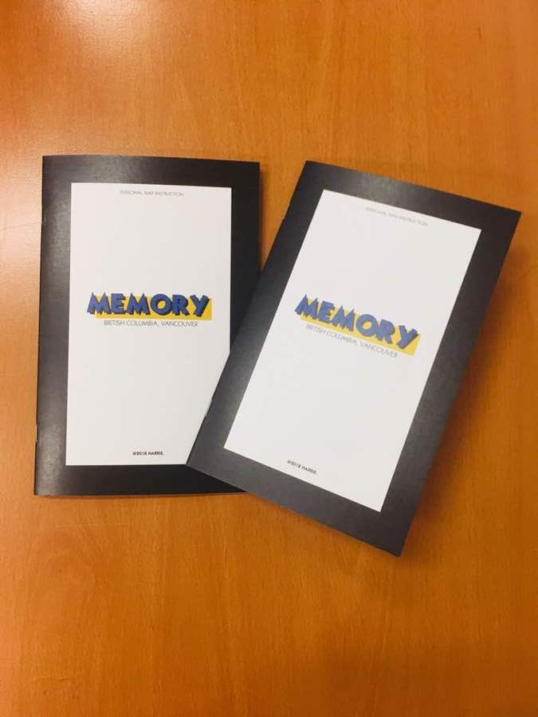